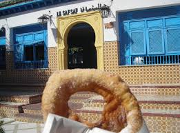

.jpg)


.jpg)


Djerba Explore: The Crocodile Farm & More
 - All You Need to Know BEFORE You Go (with Reviews).jpg)
.jpg)

Djerba Explore is the island’s premier leisure and cultural complex, offering a unique mix of adventure and history. The highlight is the Crocodile Farm, the largest in the Mediterranean, home to over 400 Nile crocodiles basking in lush tropical lagoons. Beyond the thrill of the reptiles, visitors can wander through the Lalla Hadria Museum, which showcases thirteen centuries of exquisite Islamic art, or explore the Heritage Zone, a reconstructed traditional village where artisans demonstrate ancient weaving and pottery techniques. It is the perfect family destination where education meets excitement.
A Taste of Djerba: Local Gastronomy



Djerbian cuisine is a flavorful journey through Mediterranean and North African traditions. No visit is complete without tasting Rouz Jerbi, a signature steamed rice dish packed with aromatic herbs, vegetables, and tender meat. Seafood lovers must try the fresh catch of the day, often prepared in traditional clay pots used by local fishermen for centuries. For a snack, head to the Jewish quarter for a famous Brik Ishak or enjoy a sweet Bambalouni (Tunisian donut) paired with traditional mint tea and roasted peanuts
Top Activities: Adventure & Leisure
.jpg)


he island is a playground for outdoor enthusiasts. You can set sail on a Pirate Boat Trip to Ras Rmel (Flamingo Island) for a day of music, dancing, and dolphin watching. For thrill-seekers, Quad Biking and Buggy tours offer an adrenaline-filled way to explore the blue lagoons and hidden olive groves. If you prefer a slower pace, enjoy a Horseback or Camel ride along the shore at sunset, or take advantage of the island’s perfect wind conditions for a world-class Kitesurfing experience.
Practical Travel Tips for Your Visit
- Best Time to Visit: Djerba enjoys over 300 days of sunshine. Late spring (May-June) and early autumn (September-October) offer the most pleasant weather for exploring.
- Getting Around: Yellow taxis are plentiful and very affordable. For a more local experience, rent a bicycle or scooter to navigate the island’s flat terrain.
- Shopping: The best souvenirs are found in Houmt Souk (textiles and jewelry) or the village of Guellala, famous for its handmade pottery.
- Culture & Etiquette: While Djerba is very open, it is respectful to dress modestly when visiting religious sites like the El Ghriba Synagogue or the island’s many historic mosques.
Experience the Excellence
Bespoke Tours
- Crafted itineraries by travel experts.
- Exclusive access to hidden gems.
- Luxury and comfort in every step.
Premium Quality
- Hand-picked elite local guides.
- High-end private transportation.
- First-class customer satisfaction.
24/7 Assistant
- Personal support throughout your trip.
- Instant response to your needs.
- Seamless travel management.
True Authenticity
- Deep cultural immersion.
- Private local experiences.
- Memories that last a lifetime.